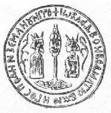

- transylvania -
|
Dracula - The Truth VLAD THE IMPALER - DRACULA For almost a millenium, the lands in the Carpathian-Danubian-Pontic area were ploundered by the migratory people. Beginning with the 10th and 11th centuries, the Eastern part of Europe begins to be threatened by the last large migratory vallum, made of Turkish nations. The Romanian Country had the Black Sea in the East, the Ottoman Empire in the South and Moldavia and Transylvania in the North. Between 1389-1402 the ruler of the Ottoman Empire was Sultane Baiazid (nicknamed The Lightning). The Romanian Country was ruled by Mircea the Old, one of the greatest leaders of the Romanian army, who defeated two large military expeditions commanded by Baiazid. |
|
" Migratory tribes coming from Central Asia cross former Dacia in all directions. Some of these tribes settle south of Danube (Slavs and Bulgarians), others in the Panonian Plain (Hungarians), while a sizable amount of Slavs mix with the locals, who are already speaking a Romance language. Hungarians fight against the first Romanian Statelets in Transylvania. In Transylvania the Byzantine influence is weaker and combines with some Slavic and increasing Hungarian influence. Germanic colonists settle in some regions of Transylvania. |
), or near the border to Moldavia (Brebu, Maxineni). Following the example of his forefather, Neagoe Basarab, Matei Basarab raised churches and monasteries abroad too, whether south of Danube (St. Peter and Paul in Svishtov) in Moldavia (Soveja and Dobromira Monasteries) or Transylvania (Porcesti Church). He restored and repainted monasteries at Mount Athos, i. It consists of traditional forms and motifs and imposes by its simplicity, harmony of proportions and acurateness of design.
|  |
|
The Dracul family tree as given by Jeanne Kalogridis in her novels Dracula's empty tomb Fortress of Belgrade Cronstad . . Vlad Tepes (which Kalogridis spells phonetically in English as Tsepesh) was born in the town of Sighisoara in Transylvania (now known as northern Romania) in 1431 and later came to rule that area of southern Romania known as Wallachia. The word "tepes" in Romanian means "impaler" -- and Vlad was so-named because of his penchant for impalement as a means of punishing his enemies. Impalement was a particularly gruesome form of execution, wherein the victim was impaled between the legs -- to put it politely -- upon a large, sharpened stake the width of a burly man's arm. |
read more at: http://www.gcrio.org/CONSEQUENCES/vol4no1/carbonecon.html